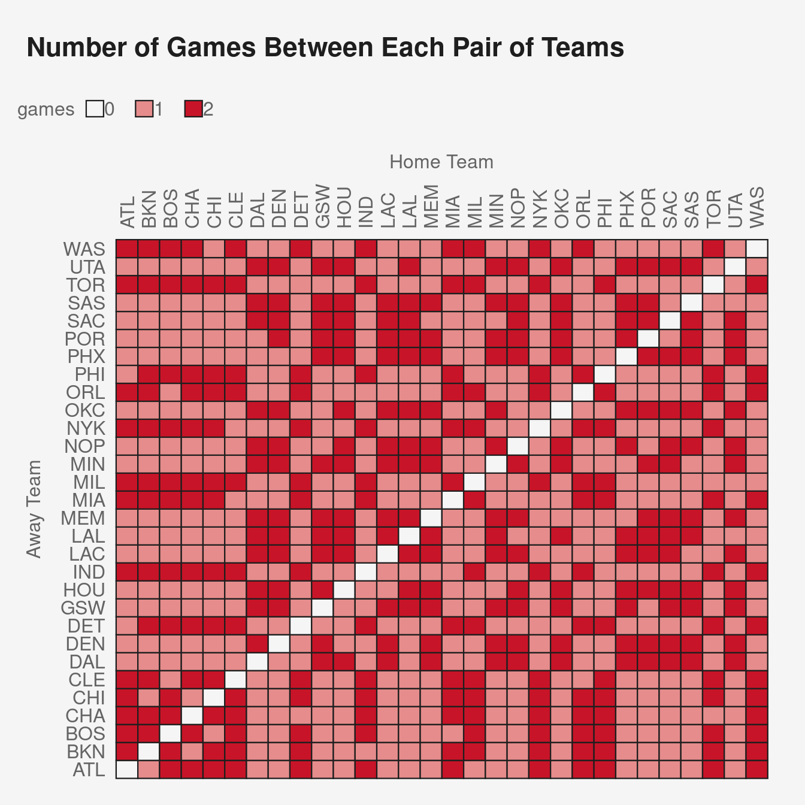

4.6 Points previous vs current season
Let’s see if a team’s average points scored from the previous season is related to their points scored in the current season. First, we’ll have to rearrange the data a little since teams can appear in both the home and away column. Ideally, we would have one column with the team name, and one column with the score. Each game would then have two rows, one for the away team and one for the home team. Here is one way to do that:
Code
da = d %>% select(date, away, ascore, home, hscore, season, gid) %>% mutate(ha = 'away')
dh = d %>% select(date, home, hscore, away, ascore, season, gid) %>% mutate(ha = 'home')
colnames(da) = c('date', 'team', 'score', 'opp', 'opp.score', 'season', 'gid', 'ha')
colnames(dh) = c('date', 'team', 'score', 'opp', 'opp.score', 'season', 'gid', 'ha')
dd = bind_rows(da, dh) %>%
arrange(date, gid)
head(dd) date team score opp opp.score season gid ha
1 2020-12-22 GSW 99 BKN 125 2021 22000001 away
2 2020-12-22 BKN 125 GSW 99 2021 22000001 home
3 2020-12-22 LAC 116 LAL 109 2021 22000002 away
4 2020-12-22 LAL 109 LAC 116 2021 22000002 home
5 2020-12-23 MIL 121 BOS 122 2021 22000003 away
6 2020-12-23 BOS 122 MIL 121 2021 22000003 homeNote that, for example, the first two rows correspond to the first game, and contain the same information that was in the first row of the previous data frame.
Now we can compute average points scored by team for each season.
Code
ds = dd %>%
group_by(team, season) %>%
summarise(score = mean(score))
head(ds)# A tibble: 6 × 3
# Groups: team [3]
team season score
<chr> <chr> <dbl>
1 ATL 2021 114.
2 ATL 2022 114.
3 BKN 2021 119.
4 BKN 2022 113.
5 BOS 2021 113.
6 BOS 2022 112.We now have two rows per team, one for each season. If we want a scatter plot, we’ll pivot_wider to have a column for each season. We don’t want column names that start with a number (we would have to use the tick marks `2022` all the time), so we’ll rename those too.
Code
ds = ds %>%
pivot_wider(id_cols = team,
names_from = season,
values_from = score) %>%
rename(s2021 = `2021`,
s2022 = `2022`)
head(ds)# A tibble: 6 × 3
# Groups: team [6]
team s2021 s2022
<chr> <dbl> <dbl>
1 ATL 114. 114.
2 BKN 119. 113.
3 BOS 113. 112.
4 CHA 109. 115.
5 CHI 111. 112.
6 CLE 104. 108.Now we can make a scatter plot.
Code
ggplot(ds,
aes(x = s2021,
y = s2022,
label = team))+
geom_point()+
geom_text(hjust = -.1)
Current and previous season performances are related, despite the fact that some players, coaches, and front office personnel change teams in the offseason. Also, note the correlation is about 0.55:
Code
cor(ds$s2021,
ds$s2022)[1] 0.5504614